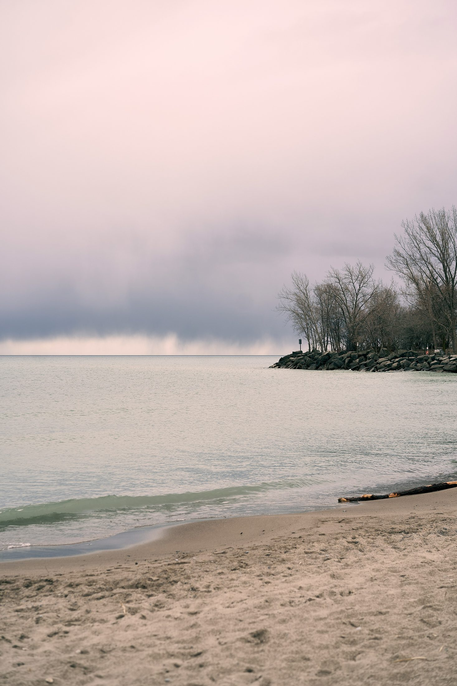
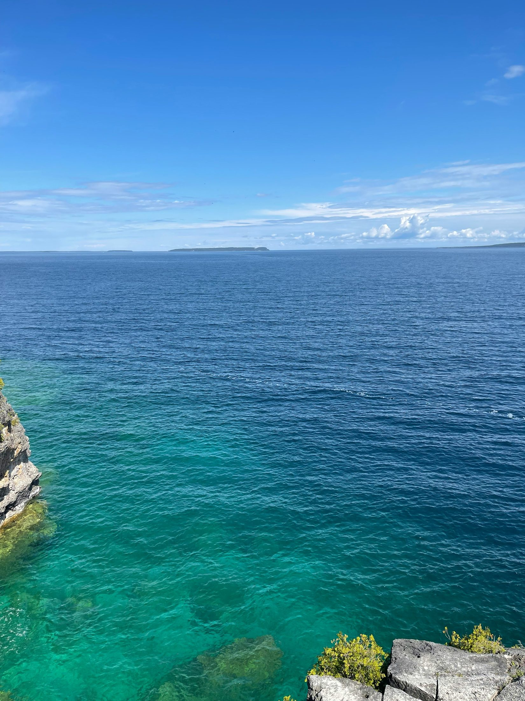
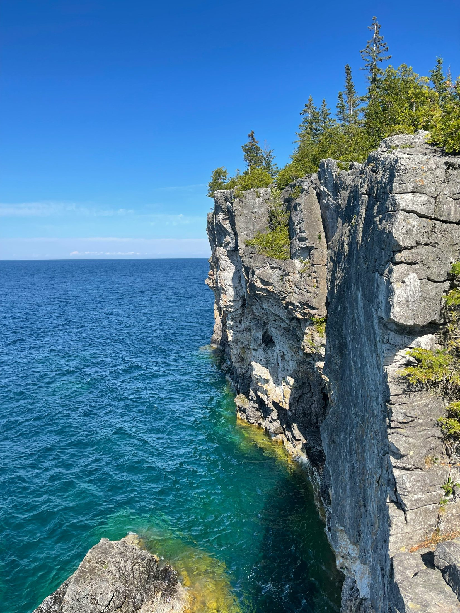

A slower Bruce Peninsula stop for shallow turquoise water, soft sand, boardwalks, sunset walks, and an easier beach day before or after Tobermory.
Dorcas Bay and Singing Sands are best treated as the slow, relaxed part of a Bruce Peninsula trip. Instead of rushing between the Grotto, Tobermory harbour, and Flowerpot Island, this is where you pause: take your shoes off, walk the shoreline, sit with snacks, and let the day breathe.



Keep this low-pressure. Bring a blanket, water, sandals, sunscreen, and light food.
Use this as the relaxed part of the trip. No need to schedule multiple attractions here.
Simple picnic is better than trying to coordinate a restaurant mid-day.
Pair with Big Tub Lighthouse, Little Tub Harbour, or a quiet evening in town.
Use this as the quick seasonal decision guide before choosing a date.
Best for long daylight and relaxed exploring.
Cooler weather, softer light, and better colours.
Fresh scenery but conditions can vary.
Only if access and road conditions are suitable.
A quick scan to decide whether this is the right kind of trip for the two of you.
Use these as your shot list so you actually capture the moment when you are there.
Tip: Take both landscape and couple version.
Tip: Shoot from behind or side for natural movement.
Tip: Capture what made the place feel different.
The practical details that keep a beautiful day from becoming stressful.
Check parking/reservations before leaving.
Bring water, layers, and comfortable shoes.
Keep the plan slow so the trip feels memorable, not rushed.